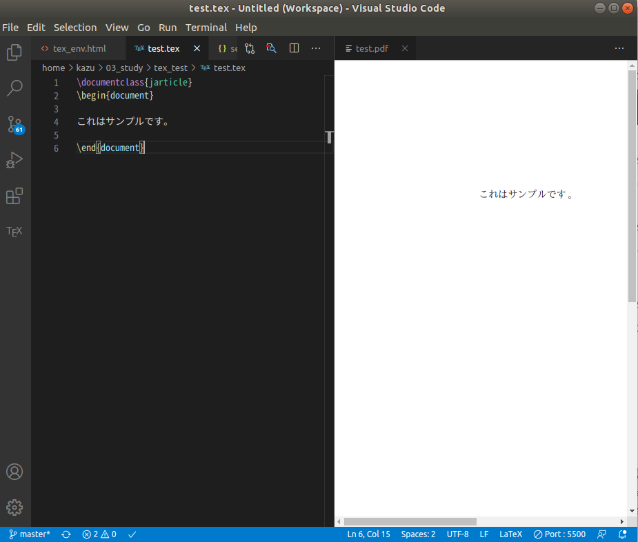

はじめに
vscodeでtexを編集する環境が充実してそうなので入れてみました．プレビューがすぐに反映されるので良いです．
入れるもの
- latex環境(texlive)
- vscode
- LaTeX workshop(vscodeの拡張)
LaTeX環境の構築
$ sudo apt update $ sudo apt upgrade
LaTeXのインストール
$ sudo apt install texlive-lang-cjk xdvik-ja evince $ sudo apt install texlive-fonts-recommended texlive-fonts-extra
デフォルトでの使い方
$ platex hoge.tex $ dvipdfmx hoge.dviコンパイルされたpdfを閲覧する際に，evinceを使用するとpdfを開いたまま再コンパイルできるらしい．
$ evince hoge.pdf &
.latexmkrcの設定
~/.latexmkrcを作成し以下のように記述※設定内容は参考をそのまま使用
#!/usr/bin/env perl
# LaTeX
$latex = 'platex -synctex=1 -halt-on-error -file-line-error %O %S';
$max_repeat = 5;
# BibTeX
$bibtex = 'pbibtex %O %S';
$biber = 'biber --bblencoding=utf8 -u -U --output_safechars %O %S';
# index
$makeindex = 'mendex %O -o %D %S';
# DVI / PDF
$dvipdf = 'dvipdfmx %O -o %D %S';
$pdf_mode = 3;
# preview
$pvc_view_file_via_temporary = 0;
if ($^O eq 'linux') {
$dvi_previewer = "xdg-open %S";
$pdf_previewer = "xdg-open %S";
} elsif ($^O eq 'darwin') {
$dvi_previewer = "open %S";
$pdf_previewer = "open %S";
} else {
$dvi_previewer = "start %S";
$pdf_previewer = "start %S";
}
# clean up
$clean_full_ext = "%R.synctex.gz"
latexmkが入ってない場合
texliveと一緒に入るらしいのですが，入ってない場合にはaptで入れちゃえば大丈夫だと思います．(僕はそうしましたが今のところ問題ありません)
$ sudo apt install latexmk
vscodeの設定
vscodeにLaTeX workshopを入れたら，setting.jsonに以下のような設定を追加※参考ページの設定をそのまま使わせていただきました．
"[tex]": {
// スニペット補完中にも補完を使えるようにする
"editor.suggest.snippetsPreventQuickSuggestions": false,
// インデント幅を2にする
"editor.tabSize": 2
},
"[latex]": {
// スニペット補完中にも補完を使えるようにする
"editor.suggest.snippetsPreventQuickSuggestions": false,
// インデント幅を2にする
"editor.tabSize": 2
},
"[bibtex]": {
// インデント幅を2にする
"editor.tabSize": 2
},
// ---------- LaTeX Workshop ----------
// 使用パッケージのコマンドや環境の補完を有効にする
"latex-workshop.intellisense.package.enabled": true,
// 生成ファイルを削除するときに対象とするファイル
// デフォルト値に "*.synctex.gz" を追加
"latex-workshop.latex.clean.fileTypes": [
"*.aux",
"*.bbl",
"*.blg",
"*.idx",
"*.ind",
"*.lof",
"*.lot",
"*.out",
"*.toc",
"*.acn",
"*.acr",
"*.alg",
"*.glg",
"*.glo",
"*.gls",
"*.ist",
"*.fls",
"*.log",
"*.fdb_latexmk",
"*.snm",
"*.nav",
"*.dvi",
"*.synctex.gz"
],
// 生成ファイルを "out" ディレクトリに吐き出す
"latex-workshop.latex.outDir": "out",
// ビルドのレシピ
"latex-workshop.latex.recipes": [
{
"name": "latexmk",
"tools": [
"latexmk"
]
},
],
// ビルドのレシピに使われるパーツ
"latex-workshop.latex.tools": [
{
"name": "latexmk",
"command": "latexmk",
"args": [
"-silent",
"-outdir=%OUTDIR%",
"%DOC%"
],
},
]
独自のスニペットを登録
vscode内の左下の歯車からユーザースニペットを選択，latexを選択するとlatex.jsonが生成される．そこにスニペットを定義する．(正直そんなにわかってないけど，こちらも参考ページの例を載せときます)
{
"report": {
"prefix": "report",
"body": [
"\\documentclass[${1:a4paper,11pt}]{${2:jsarticle}}",
"",
"",
"% 数式",
"\\usepackage{amsmath,amsfonts}",
"\\usepackage{bm}",
"% 画像",
"\\usepackage[dvipdfmx]{graphicx}",
"${3}",
"",
"\\begin{document}",
"",
"\\title{${4}}",
"\\author{${5}}",
"\\date{${6:\\today}}",
"\\maketitle",
"",
"",
"$0",
"",
"",
"\\end{document}"
],
"description": "授業レポート用テンプレート"
}
}
- 最初の"report"keyは一意の文字列なら何でも良い
- "prefix" : スニペットを呼び出すときの名前
- "body" : スニペットの内容．リストの各要素はそれぞれ1行に展開される
実際に使ってみる
- 以下のtexファイルを作成しctrl+alt+bでビルド
- ctrl+alt+vでプレビューを表示
// test.tex
\documentclass{jarticle}
\begin{document}
これはサンプルです。
\end{document}
以下のようにプレビューが表示されればOK